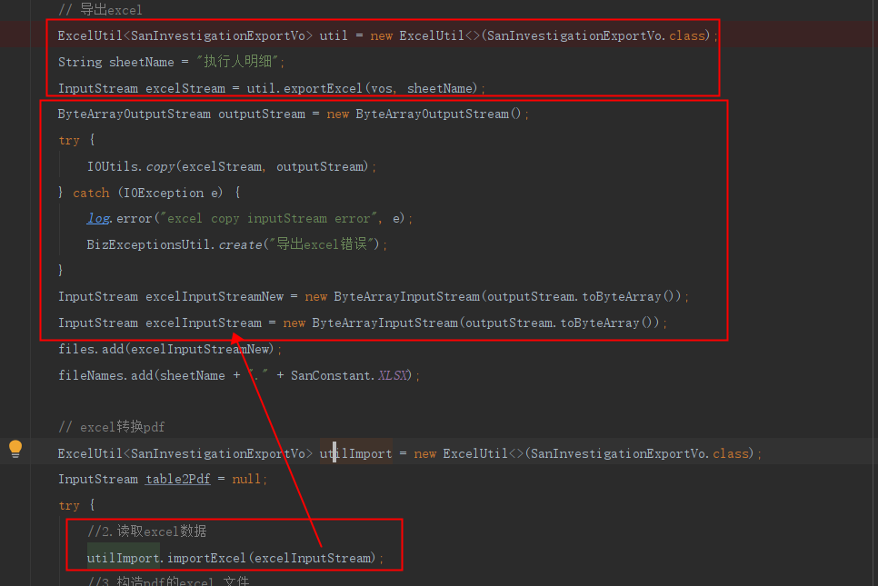
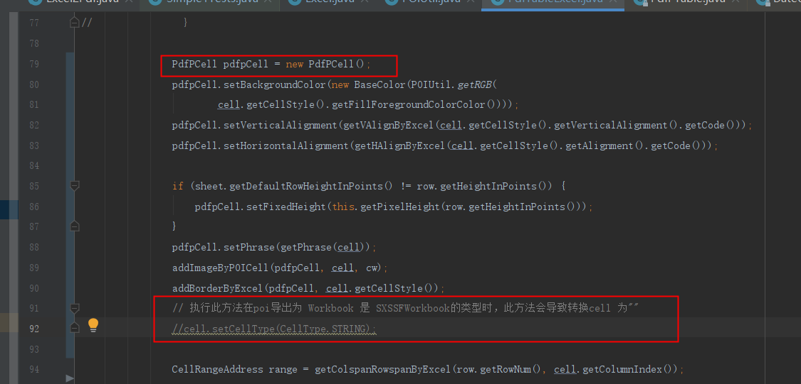

最近项目有需求，需要把excel转pdf.由于时间比较急，所以在github上找了一个转换的。最终没用上，但还是踩坑了一波。
踩坑一：
首先，这个是导出的流之间会互相影响，因为流读取过，导致导出的excle文件没有数据，所以要new 新的流

踩坑二：
github上找的excel转pdf工具类，本来以为挺简单的。大意了，搞了很久发现工具类有问题，项目还着急提测。导致我被pm说了一波。
原工具类地址：https://github.com/caryyu/excel2pdf
我完善过的工具类：https://gitee.com/liran123/exceltopdf
具体坑说明：
我也遇到过的问题
后来debug发现了问题所在。poi导出excel的流文件是用 SXSSFWorkbook的类型导出的。但是转换后pdf内容就是一条黑线。换成 XSSFWorkbook就可以。后来看到注释掉下面代码就可以了。
扩展：HSSFworkbook,XSSFworkbook,SXSSFworkbook区别总结

说明一下：工具类还需要继续完善，有时间的时候需要继续完善。如还有发现问题欢迎评论